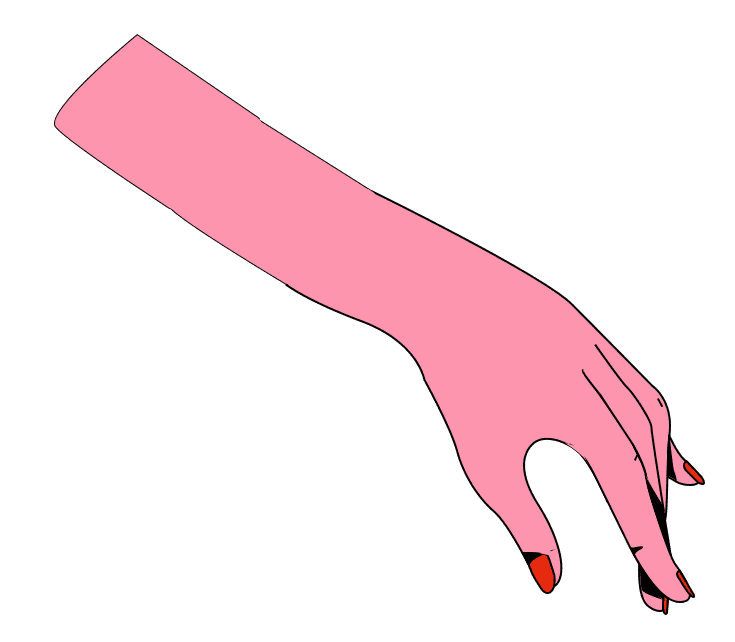
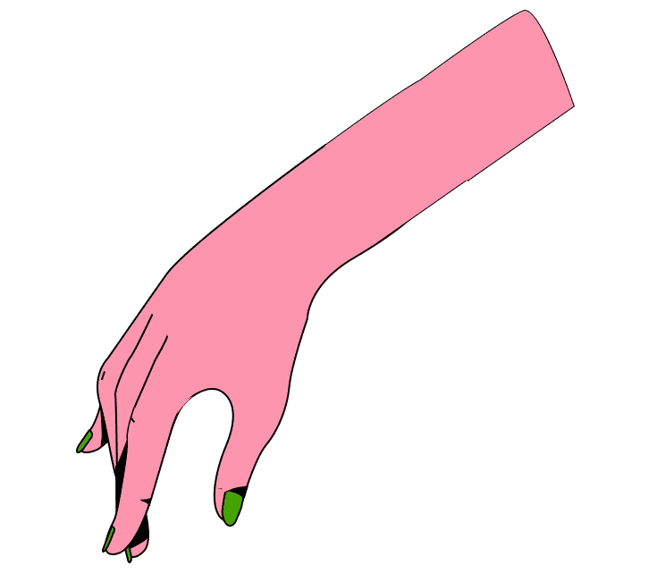
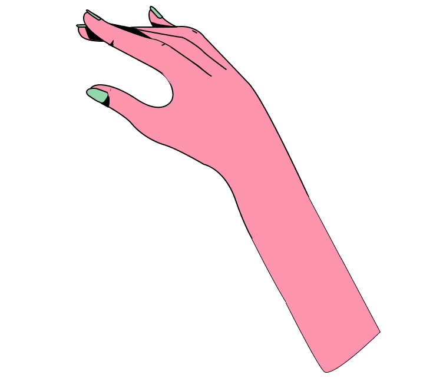

'공기를 읽는다'라는 표현이 있습니다. 눈치란 말하지 않고도 상대방의 의중을 살펴 ‘알아서’ 행동하게끔 하는 문화적 행위양식으로, 일종의 비언어적 의사소통 방식이라 할 수 있습니다.
한국은 "동의하지 않는다" 라는 말을 할때는 최대한 빙빙 돌려말합니다.. 반면에 미국은 동의하지 않으면 "I disagree"라고 직설적으로 표현하는 편입니다.
“눈치가 한국인들에게 집단주의와 내향성, 그리고 무엇보다 '조용히 입을 다물고 있는 상태'를 유지하도록 요구하고 있다.”
(뉴욕 타임즈)
어떻게 보면 눈치사회, 눈치문화는 꽤 바람직해 보입니다. 사실 IMF 금모으기 운동, 코로나 시기에도 우리나라의 특유의 눈치문화는 집단주의적 사회를 형성하여 국민들끼리 똘똘 뭉치도록 도와준 주요 요인입니다.
하지만 정말 장점만 있을까요?
실제로 노스페이스가 '교복' 이라고 착각할 사람이 있을 만큼 당시 모든 고등학생들은 날이 더우나 추우나 노스페이스만 입고 다녔습니다. 그 이유는 무엇일까요?
학생들은 '노스페이스'를 입음으로써 자신이 다른 학생들과 마찬가지로 무리에 속해있다는 안정감을 느낍니다. 다른 학생들이 무엇을 입는지, 나만 유행에 뒤쳐진 것은 아닌지 '눈치'보며 값비싼 가격에도 불구하고 노스페이스 잠바를 구입하는 것이죠.
이 뿐만이 아닙니다. 노스페이스 모델들은 여러 종류로 나뉘고 가격도 다 다릅니다. 더 비싼 모델의 잠바일 수록 더 높은 계급에 속할 수 있으며, 반대로 값싼 모델의 잠바를 입으면 '찌질이' 라고 불리는 등 조롱을 받습니다.

이 모든 문제들의 원인은 바로'눈치보는 한국 사회'입니다. 학교라는 작은 사회 안에서도 학생들은 서로 눈치를 보며 유행에 뒤쳐지지 않으려고 애쓰고, 결국 모두가 획일화 되는 문제가 발생하죠.
이러한 문화는 사라지는게 맞습니다.
한국에서 길을 가다보면 나와 똑같은 옷을 입고 있는 사람들을 어렵지 않게 찾아볼 수 있습니다.왜일까요?
클론룩, 즉 옷을 복제한 것 처럼 비슷한 스타일의 옷들로 알려진 브랜드가 있습니다. 바로 무신사 입니다. 한국인들은 유행에 뒤처지는 것을 두려워합니다. 눈치 사회속에서 이들은 유행에 뒤쳐지지 않고 무난한 옷을 필요로하죠. 브랜드 무신사는 이렇게 무난히 입고 다닐만한 옷들을 비교적 저렴한 가격에 판매해 많은 인기를 얻게 되었고, 그만큼 많은 사람들이 같은 옷을 입게되는 결과를 초래했습니다.
이런 현상을 조롱하는 “무신사 냄새”라는 말도 생겨났습니다. 유명한 인터넷 방송 snl에서 “아 무신사 냄새 지리네” 라는 멘트를 하여 큰 화제가 되었습니다.

항상 눈치를 보며 유행을 따라가기 바쁜 눈치사회. 유행을 따라가려다 보니 개인의 개성을 살리는 옷 보다는, 튀지 않는 남들과 비슷한 옷들을 입게됩니다. 비슷한 옷을 입는다는 것이 나쁘다는 것은 전혀 아닙니다.
하지만 본인만의 매력을 살릴 수 있는 옷을 입어보면 어떨까요?
'요즘 유행하는 얼굴'이라는 말은 한국에서만 볼 수 있는 말로, 획일화된 한국의 미의 기준을 내포하고 있습니다.

대표적인 사례로는 '짧은 중안부' 열풍이 있습니다. 여성들 사이에서 블랙핑크 제니, 엔믹스 설윤과 같은 얼굴의 중안부 부분이 짧아 귀엽고 어려보이는 얼굴이 유행을 하기 시작하면서, 이와 관련된 성형시술 건수가 급증하였습니다.
아름다움은 하나로 규정할 수 없습니다. 우리는 모두 다르기에 가치있는 것이죠. 사람은 누구나 자신만이 가질 수 있는 대체 불가한 매력을 가지고 있습니다. 만약 자신의 외모가 사회가 정한 미의 기준에 부합하지 않더라도, 자신만의 매력을 살려 자기 자신을 충분히 아름답게 꾸밀 수 있습니다.
눈치문화의 악영향은 여기에서 끝나지 않습니다. 패션, 외모 등의 겉모습에 이어 우리들의 사고 방식, 삶 그 자체 마저 획일화 될 수 있습니다.

눈치 사회속에서 우리는 점점 획일화되어가는 듯 보입니다. 이런 눈치 사회 속에서 우리는 자신의 개성과 자신 그 자체를 어떻게 지켜나가야할까요?
우리는 현재 우린나라에 뿌리내린 눈치 사회를 받아들되, 자신만의 개성과 빛깔을 찾아가는 것에 더욱 집중할필요가 있습니다. 타인이 나에 대해 어떻게 생각하는지 보다 내가 나를 어떻게 생각하는지를 더 중요하게 생각하고, 남들과 자신과의 비교를 멈추어야합니다.
여러분들도 이제 그만 눈치 사회속에서 벗어나 자신만의 개성을 추구해보는 것이 어떨까요?